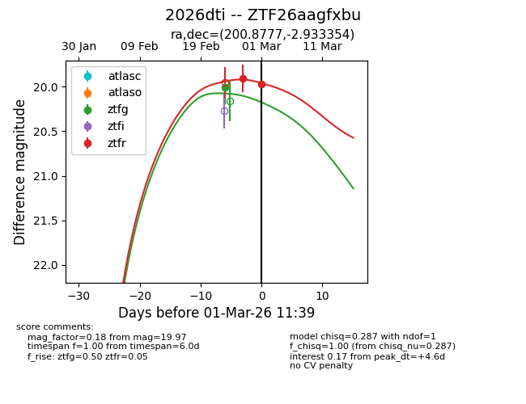
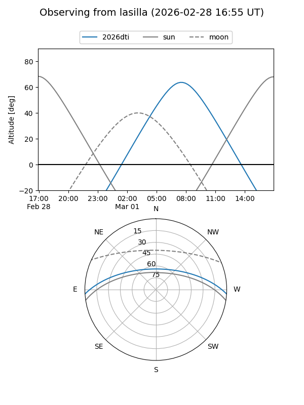
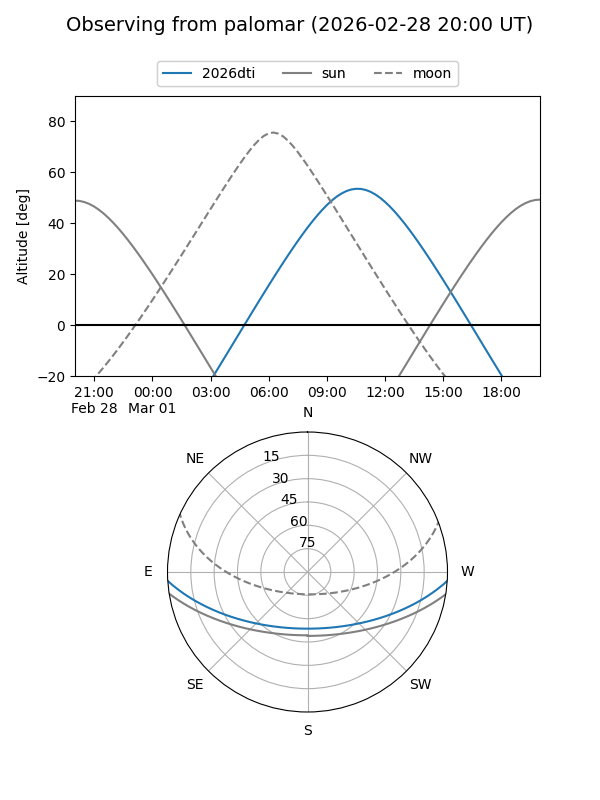
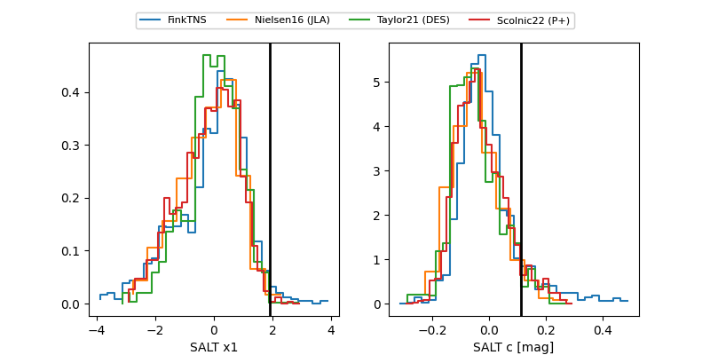

2026dti
Target 2026dti at 2026-03-01 11:40
Aliases and brokers:
FINK: link
Lasair: link
ALeRCE: link
TNS: link
YSE: link
alt names
ZTF26aagfxbu (ztf,fink_ztf)
2026dti (tns,yse)
Coordinates:
equatorial (ra, dec) = 200.8777,-2.93335
equatorial (HMS+DMS) = 13:23:30.65,-02:56:00.07
galactic (l, b) = (318.6053,+58.95893)
Flags:
Photometry:
last ztfg=20.00, ztfr=19.97
1 ztfg, 2 ztfr detections
Lightcurve

Visibility


Additional plots
